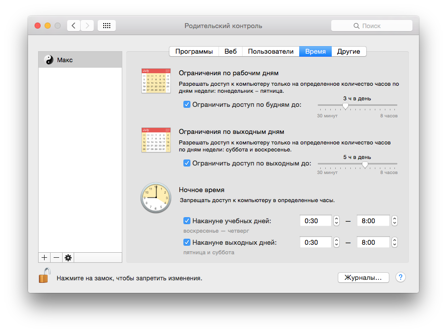

Компьютеров в нашей жизни стало больше чем хочется. И заменить они могут всё. Современный человек выбирает, что ему нужно: всё или компьютеры. И, если взрослый человек ещё хоть изредка может сделать осознанный выбор, то подростку никакого выбора не остаётся. Билл Гейтс со Стивом Джобсом довели родителей до того, что те бывают счастливы, когда их сын или дочь подолгу пропадают на улице. Потому как всё чаще дети предпочитают более лёгкую альтернативу — игры, ВКонтакт, Youtube.
Понимая, что совсем вычеркнуть компьютеры и интернет из жизни человека уже не выйдет (ты же не по холодильнику читаешь этот текст?), родители вынуждены искать баланс.
Как говорил Аль Капоне «С помощью пистолета и доброго слова можно добиться гораздо больше, чем с помощью одного доброго слова». Так и в случае с подростком все просьбы и рекомендации будут проигнорированы (даже, если выполнены для вида).
Я отключал доступ в интернет через кабинет на айфоне сына, но он включал его обратно с помощью USSD-команды. Теперь, уже около полугода, у сына (похоже у единственного в школе) вовсе нет телефона, прям как у тебя в детстве.
Тут нужно сделать отступление и сказать, что сын, относительно компьютера и интернета, в общем-то сохраняет сознание и понимает, что долго сидеть за ним вредно. Но ведь ты тоже понимаешь и иногда в половине второго ночи вдруг понимаешь, что ничего важнее истории монгольского ВМФ для тебя нет.
Оставался доступ в интернет с компьютера, да и вообще доступ к компьютеру. Но, по условиям задачи, у нас нет цели полностью вычеркнуть компьютер из жизни сына.
К сожалению, роутер, который поставляет своим клиентам Билайн, не поддерживает функцию родительского контроля. Такая функция в настройках роутера есть, она могла бы решить проблему с интернетом, настраивая её даже можно установить время и mac-адреса устройств, но… она не работает. Какое-то время я решал проблему периодически блокируя полностью доступ по mac-адресам.
Отсутствие автоматизации и человеческий фактор меня не очень устраивали и я уже думал поискать специализированный софт для разграничения доступа к компьютеру по времени.
Приятным сюрпризом стало то, что функция родительского контроля на Mac присутствует на уровне системы. Причём работает именно так, как нужно. Так как в нашей семье всегда у каждого на компьютерах был отдельный аккаунт настройка доступа заняла буквально минуту.
Итак сыну теперь может использовать компьютер с 8 часов утра до 0:30 ночи. В будний день он может сидеть за ним до 3 часов, в выходной — до 5 часов.

В родительском контроле есть ещё куча функций вроде фильтров контента, но я считаю их использование баловством.
Надо отметить, что при настройке графика доступа я всё-таки дал маху. Запретив доступ по времени пользователю Макс, я не подумал, что остался без родительского контроля пользователь Гость. К счастью, сын в тот же день указал мне на дыру в безопасности и мы её оперативно закрыли.
Планирую включить родительский контроль теперь и для своей учётной записи.